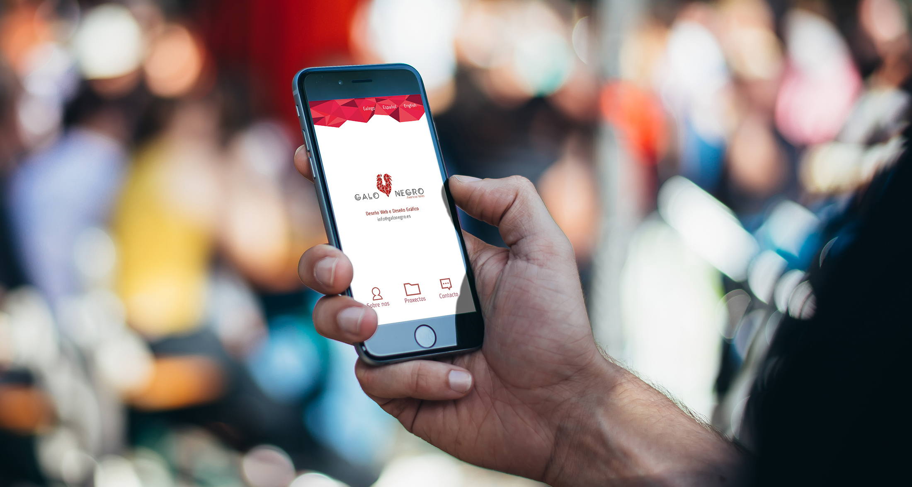
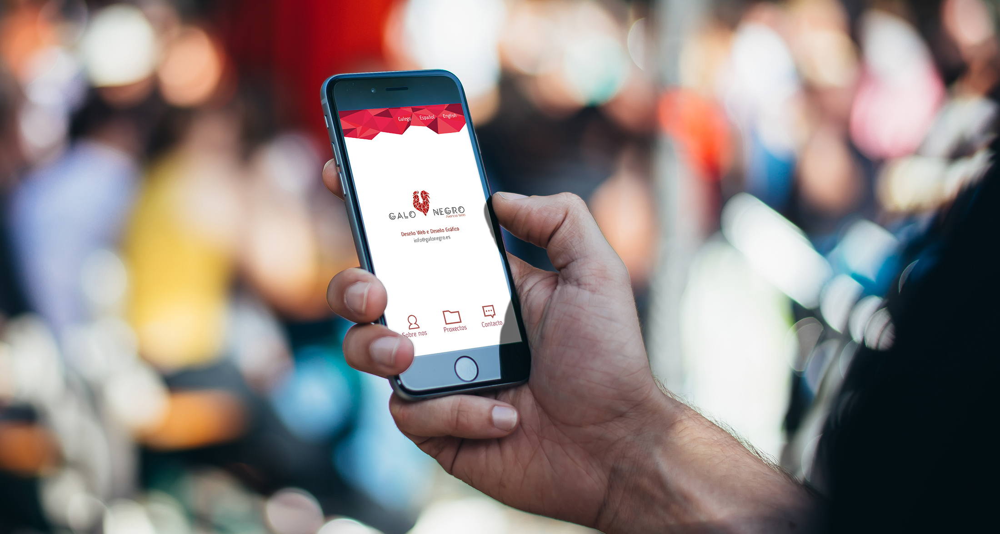
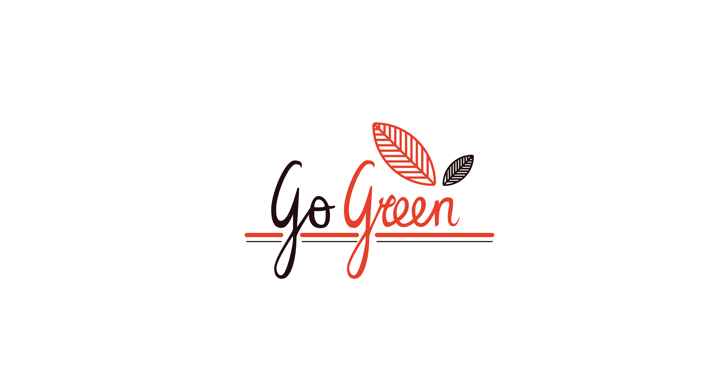
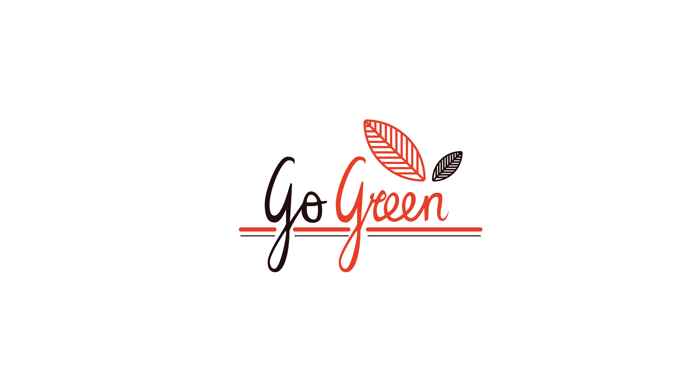

TamSanSerif
Web portfolio, original design that shows simplicity but giving a lot of color to the UI, following the look and style of the designers art that we are trying to catch attention to. All design process spins around the logo and aspires to join it's underlying idea, proposing several curve shapes and color contrast.

 



 
